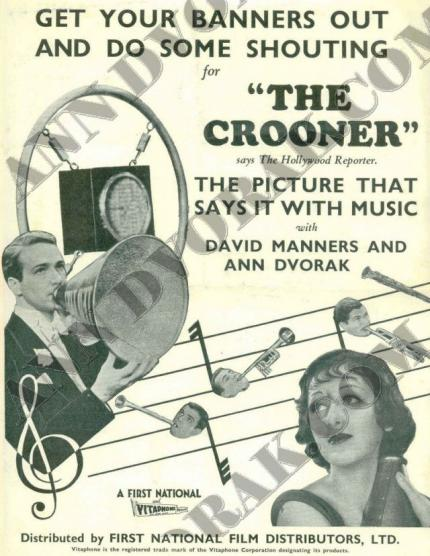
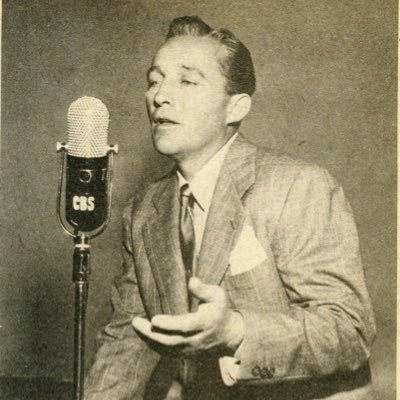
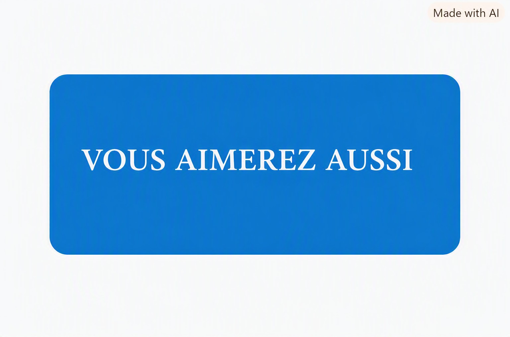

Au début du siècle précédent, quelques chanteurs surnommés aujourd'hui les "Old Fashion" ("mode d'antan"), contribuent à la naissance du style "crooner". Ils sont les pionniers du genre. En fait, ils se concentrent sur le pouvoir de transmettre leur voix aux auditeurs en braillant dans des mégaphones de fortune pour couvrir l'orchestre derrière les théâtres et les clubs qui les louent ou durant les enregistrements de 78 tours.

Ci-dessous, un extrait du film "The Crooner" (1932)
qui rend hommage à ces artistes aujourd'hui complètement oubliés,
mais qui ouvriront la voie aux Sinatra et autres Nat King Cole
C es chanteurs des années 1930 vont découvrir le microphone au cinéma et surtout à la radio. Accompagnés par le grand orchestre du radio-show qu'ils animent en direct, souvent sponsorisés par une marque de cigarettes, les chanteurs de radio constatent que s'ils susurrent tout près du micro, avec l'orchestre loin derrière, le résultat semble avoir de l'effet sur les auditrices.
Bing Crosby sera l'un des premiers à réellement jouer de ce nouvel effet, et donc à "crooner" — littéralement "fredonner" — au micro. Crosby étant reconnu pour un son plus sombre, et une approche plus énergétique dans son phrasé qui le classe à part de ses prédécesseurs. Il construit son chant autour du rythme swing, mais est relaxé et dit avoir été inspiré par le jeu de trompette de Louis Armstrong. Son élocution, étudiée par les chanteurs populaires, étant très appréciée. Il ne chante pas "au public", il chante "pour le public". Cette nouvelle sorte d'intimité est à la fois émotionnelle par la proximité apparente du chanteur, mais aussi physique, avec le son des lèvres, de la langue, et de la respiration, qui rendent le style très sincère et formeront les fondations de beaucoup de ses successeurs.

En raison de sa grande sensibilité et son amélioration à reproduire la voix, le microphone est utilisé en radio pour les émissions, les performances "live" ou encore les enregistrements. Pour la première fois, les voix plus faibles pouvaient remplir des salles de son, et simultanément communiquer chaleur et intimité. Ces voix par contre demandent énormément de contrôle et de pratique, car la technique crooner n'est pas facile et très spécialisée.
Le chanteur doit se tenir très proche du microphone, la bouche touchant presque l'instrument, le visage directement aligné avec le récepteur. Tous les sons sont captés de façon précise, et le public se sent intimement lié à l'artiste. L'inspiration est très importante, car elle doit rester absolument silencieuse. Le son du halètement causé par une inspiration mal calculée, amplifiée par l'équipement, pouvait causer la faillite de plusieurs chanteurs autrement très talentueux. Les aspirants crooners devaient pratiquer l'inspiration silencieuse de façon diligente, afin d'éliminer toute possibilité de la faire entendre au microphone.
